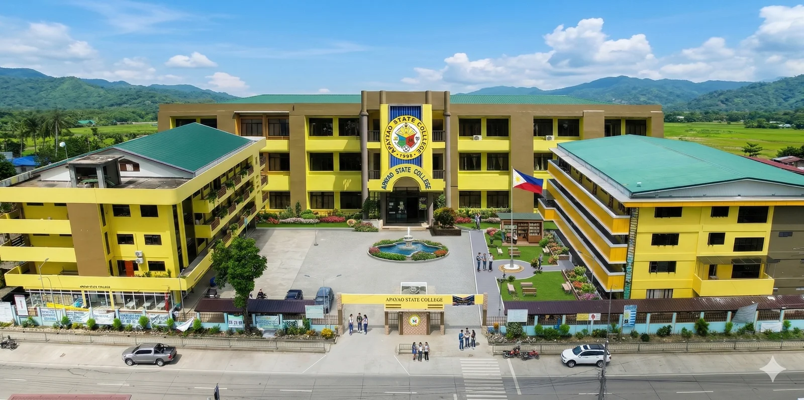

Mission:
Apayao State College is committed to nurturing and developing nation builders in critical fields towards producing graduates equipped with internationally competitive innovations who can transform society for sustainable development.
Vision:
An innovation-driven higher education institution pursuing excellence in instruction, pioneering research, community empowerment, entrepreneurship, cultural preservation, and biodiversity protection and conservation.
2nd Year BSIT student at Apayao State College.
Verse 1:
On March here we are all ASC-ians
One heart, one soul, one mind
With joy we bravely all stride, ASC is our pride.
The future smiles on us, that’s why we study hard.
This is our school song for the truth, the just, the right.
Verse 2:
Today we all stand, On ASC verdant land.
Its beautiful hills and valleys
Wonderful people, rivers, and trees.
Verse 3:
Onward we all march, thru faith and hope alive
Bring forth happy people, undivided peaceful tribe
Forward we all strive, our visions great and bright
Nourish body and mind aspirations great divine.
Chorus:
This is our school song for the truth, the just, the right.